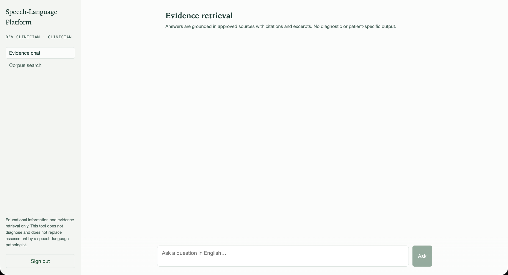

From May to August 2025, I worked at Qatar University with Dr. Tariq Khwaileh on the Phase 1 prototype of an
AI-supported consultation platform for speech and language pathology. The term combined in-person and hybrid work,
and my main responsibility was turning an early architecture into a working English-language prototype I could demo.
What stayed with me most was that a useful clinical AI system is not just about getting a model to produce an answer.
The surrounding system has to be careful about evidence, privacy, and the limits of what it should tell clinicians or families.
Employer Information
I worked under Dr. Tariq Khwaileh at Qatar University in Doha, where he is an Associate Professor of Linguistics in the
Department of English Literature and Linguistics and Section Head of Data Analytics and Assessment. His research sits
at the intersection of psycholinguistics, language disorders, and neuropsychological assessment, and he leads the
Arabic Aphasia Lab.
A few things I found genuinely interesting about his work were that much of aphasia research has been built on English and other
Indo-European languages, so his group has spent years building the assessment materials Arabic clinicians were missing
including an aphasia battery for Qatari/Gulf Arabic and a standardized set of hundreds of object and action pictures with
naming-latency norms. More recently his lab has moved into computational territory, publishing on automated systematic
review workflows and on clustering aphasic speech by feature extraction technique. Across 26 publications his work has
been cited around 250 times and read over 17,000 times.
That combination is exactly the area of computing this term lived in, applied natural language processing and machine
learning in a clinical and linguistic research setting, where the language itself is the data.

Job Description
My project was an AI-powered consultation platform for speech and language pathology, built to serve two very different
audiences. The first was the parents looking for grounded answers about their child's speech development, and the second
clinicians and researchers who need to work with source material directly. I was responsible for the system
end-to-end retrieval layer, the model backend, the API, the interface, and the infrastructure that ties them together.
The Phase 1 prototype was a self-hosted, English-only, text-based build. It used retrieval-augmented generation so responses
could be grounded in source documents and accompanied by citations. I also worked on importing corpus data, containerizing
the services so the stack could run consistently, and keeping the model backend replaceable rather than tying the project
to one machine or provider.
The most unique part of the job was that the hard questions weren't coding questions. Deciding that the system must refuse
to diagnose, that it should say "I don't know" rather than guess, and that research-licensed corpus data must stay isolated
from anything a parent sees. Those decisions shaped the architecture more than any performance consideration did.
Python
FastAPI
Next.js
PostgreSQL
pgvector
Ollama
vLLM
Qwen3
RAG
Docker Compose
Goals and Learning Outcomes
Coming into the term, I had two goals of my own on top of my formal learning outcomes. The first was to get better at
connecting a real-world problem to an AI solution, starting from what a clinician and a parent actually need rather
than from what a model can do. The second was to grow technically, because I was going to be the only person building this
and there was nobody to hand the hard parts to.
The technology choices followed from the problem. Everything had to be self-hosted on open-weight models, because clinical
and research data can't be shipped off to a third-party API. That meant Qwen3 served locally through Ollama during development
and vLLM for larger deployments, Qwen3 embedding and reranker models for retrieval, PostgreSQL with pgvector for similarity
search, FastAPI for the backend, Next.js for the interface, and Docker Compose to orchestrate it all. Each of these was chosen
because of a constraint, and being able to explain why is the part I'm most glad I have.
My courses gave me a base in databases, web development, APIs, and software design. The parts I mainly learned during the
term were vector search, retrieval-augmented generation, local model serving, and coordinating several services with Docker.
Connecting those new tools to concepts I already knew made the project manageable and gave me experience I can carry into
future software and AI roles.
Completed
Personal Organization & Time Management
With no fixed sprint structure, I was setting my own priorities on a system with a long-term architecture. The shift that
worked was finishing one complete path through the system before adding breadth, and deliberately cutting scope ahead of a
demo instead of running out of time across several half-built features. A working end-to-end pipeline turned out to be far
easier to demo and build on than four partial ones.
Completed
Written Communication
Dr. Tariq is a clinical researcher, so my updates had to lead with what the system could and couldn't do before any
implementation detail, and my setup instructions had to let him run and verify the platform without me walking him through it.
I learned that overstating progress is easier to do by accident than I expected, and that being specific about what isn't
finished makes conversations more productive, not less.
Completed
Ethical Reasoning
In a healthcare context, the wrong output can affect a real family, so I treated clinical safety and data licensing as design
constraints rather than afterthoughts. The system refuses to diagnose, won't answer without verifiable citations, and keeps
research-only data isolated from parent-facing responses enforced structurally, so that violations are difficult by
design rather than dependent on the model behaving well.
Completed
Technological Literacy
Several pieces of this stack were new to me: pgvector for similarity search, local model serving through Ollama, and Docker
Compose for multi-service orchestration. I made a habit of reading the actual documentation and verifying assumptions directly
checking an embedding model's output dimension against the database schema before writing to it, for instance. The risky part
was never the setup; it was assuming a tool behaves the way I expect without checking.
Completed
Problem Solving
The project gave me several concrete problems to work through, including a migration checksum conflict, a database
authentication error, and a CHILDES corpus dry run that did not behave as expected. I learned to isolate one layer at a time
instead of changing several services at once. When the original architecture also assumed a GPU server I did not have, I
separated the model backend into replaceable pieces so development could continue on my M1 laptop with 16 GB of memory.
Partially met
What I didn't finish
The original scope included Arabic-language support and audio-based analysis, which I deferred early to keep phase one
deliverable. That was the right call, but it's honest to say it's unfinished rather than complete. Scoping is also still
the skill I'm weakest at: I got much better at estimating a two-day demo, and I'm still not reliable at estimating a
two-month build.